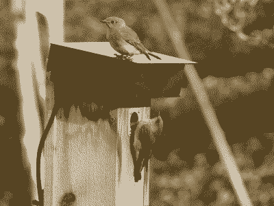

On this page, there used to be a no-js solution to image swapping that used :target in CSS selectors, but it turns out there was a negative accessibility impact to that solution. This new method requires some JS, but it's kept to a minimum.
Example
Click the "+ Pixels" button at the top right of the page to try it out
The HTML for an image
<img class="img low" src="../assets/img/myimage-low.png"
data-hisrc="../assets/img/myimage.jpg"
data-lowsrc="../assets/img/myimage-low.png"
alt="A description of my image" loading="lazy" width="400" height="300">The HTML for the button
<button class="js-imgswap" title="Toggle between low and high resolution images on page" aria-label="Toggle between low and high resolution images on page">+ Pixels</button>The CSS
.low {
image-rendering: crisp-edges;
width:800px;
}
.img {
max-width:800px;
height:auto;
}
.js-imgswap {
display:none;
}
.js-imgswap.util--show {
display:block;
}The JS
var isb = document.querySelector('.js-imgswap');
var isi = document.querySelectorAll('.low');
if(isi.length > 0){
isb.classList.add('util--show');
}
var goSwap = function(el, h){
el.setAttribute('src', h ? el.dataset.hisrc : el.dataset.lowsrc);
el.setAttribute('width', h ? el.width*2 : el.width/2);
el.setAttribute('height', h ? el.height*2 :el.height/2);
el.classList.toggle('low');
isb.innerText = h ? '- Pixels' : '+ Pixels';
}
isb.onclick = function(){
for (var i = 0; i < isi.length; i++) {
isi[i].classList.contains('low') ? goSwap(isi[i], true) : goSwap(isi[i], false);
}
}Description
The script looks through the page for any images with the class "low", and if found, reveals a button on the page and attaches the image swapping function to it. The function swaps out the source, and doubles the width/height.
The half size low-res image does two things: it greatly reduces the file size, and shows the pixels better (when enlarged by CSS). By using "image-rendering: crisp-edges;" in the CSS, the enlarged pixels are kept sharp.